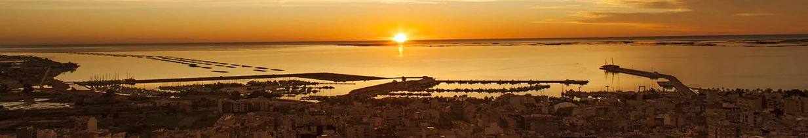
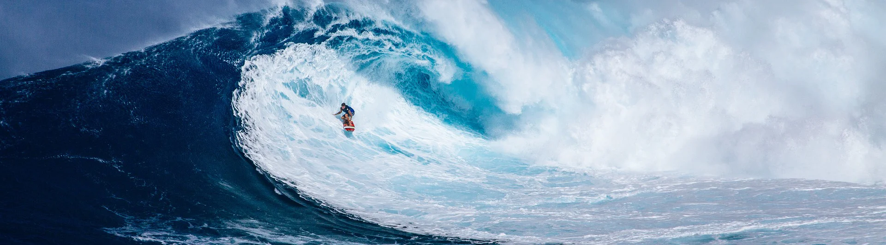
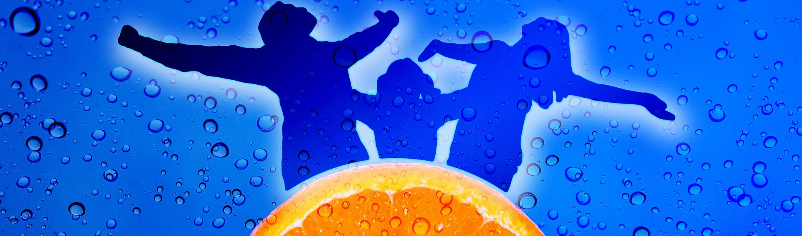

My personal journey ...
If you're here, it's because you're curious and about to
read an adaptation story that may, or may not, be
fascinating depending on the point of view.
Are you ready ?
I was born in Sant Carles de la Ràpita, a Mediterranean
city in the south of Catalonia where I grew up, which is
now simply called La Ràpita.
La Ràpita
is a municipality in the
Montsià
region, located to the south of the
Natural Park of Delta de l'Ebre, with a strong maritime tradition, rich in agricultural
crops and in recent decades has positioned itself
as a true paradise
among tourist destinations, one of the jewels of the
Terres de l'Ebre
where you can enjoy of rich and varied gastronomy combined
with a wide range of activities in nature and cultural
events throughout the year.
The geographic enclave of
the municipality between sea, river, sky and mountains
feeds us a wide variety of ecosystems giving us a sweet,
warm and very healthy climate.
As a Mediterranean
city, its inhabitants are open to all cultures, they are
hospitable and hardworking, with a great resilience
developed by their community solidarity.
My parents,
born and members of this friendly community, were engaged
in agriculture and poultry farming, my sister was a teacher
and my brother an industrial master, and my first vocation
was to be an Electronic Engineer.

At the end of my basic general education I completed the
first part of my formation in electricity and electronics
at the Polytechnic Institute of Professional Training in
Tortosa, with the pride of being the only one and the first
to complete the studies with all approved subjects.
I
continued the second part of my studies until the 4th year
at the Comte de Rius Institute in Tarragona, taking
advantage of the summers in seasonal works, until I
suffered a serious traffic accident.
The accident was very serious and almost fatal with serious
physical consequences, which put me out of action for a
good 3 years and truncated my career and my adolescence.
In
any case, I can feel lucky to keep my left arm that
was torn off, and thanks to the evolution of medicine I
have it moderately operative.
My first professional conversion :
I used the season of my recovery therapy to do an
administrative assistant course with accounting techniques
and office practice at the Cots Academy in Tortosa,
strengthening my languages.
Then my passion for the digital world was born.
For a while I went to a relative's office to
help with billing and administration. It was the first time
I worked with a computer, an
PC IBM 286 with 2Mb of RAM running under
MS-DOS.
Do you know it, or do you remember ? ...
If you keep
reading I will refresh your memory.
In my spare moments I started to teach myself how to
program small applications with this language.
The
advertisements of that time offered the first
microcomputers for personal use at affordable prices (Spectrum, Amstrad, Commodore, MSX, ...).
For Christmas I was given a Sony MSX that connected
to the TV, and it worked with code cartridges or a tape
recorder to load or save the code.
A job opportunity knocked on my door, with administrative
work in media research for a commercial advertising
company.
It didn't last long, about 7 or 8 months.
After, I
teamed up with a colleague from this job creating a company
to offer various advertising services "Publicitat Vázquez-Torta, CB".
We offer: creation of logos, posters, writing and
contracting of spaces in radios, magazines and outdoor
advertising banners, advertising objects, print
reproductions, signage, decoration of commercial facades,
etc.
In the beginning we did everything by hand, with a drawing
table, a typewriter and a telephone.
A professional
computer was unthinkable due to the high prices and poor
performance.
This team adventure lasted us about 3 years and was a
good school for learning.
The property community dissolved and within a few months I
set up as a freelancer offering visual graphic design and
printing services.
In this new adventure, I acquired my first professional
computer, a PC AT-386 with 16 MB of RAM running by
Windows 3.1, and an A4 laser printer at 300 dpi,
which when called by hardware outputted a resolution of
1200 dpi.
The labor saving was impressive, especially in the making
of the original clichés.
The first big revolution was the appearance of
Windows 3.11 which had features for connecting
computers to a network. That time was very exciting,
technology was gaining momentum with the appearance of the
internet, the first Pentium at 66 Mhz, modems at
9600 bps, high capacity backup recorders
(100Mb). The incredible possibility to chat with the
whole world, with the
mIRC
Internet Relay Chat Client, and its
IRcap
script
Phew !!! 😲😵,... those speeds make you dizzy, don't
they ?
I latched onto this whole technological wave passionately in a self-taught way, evolving at the same pace as graphic design tools, hardware and the internet. I worked a few more years as a freelancer...

My intellectual curiosity led me to enroll in the
"ESARDI" School of Art and Design
in Amposta, where I was able to develop my artistic skills
applied to graphic design. I would like to thank my mentor
Antonia Ripoll, teacher of drawing and painting and
director of the center at the time, who knew how to awaken
my learning motivations.
My comfort zone was broken
and I had to make the decision to work on contract for
third parties, caused by financial necessity due to a
series of non-payments by a client who ran a nightclub that
I supplied all their merchandising, driving me into
bankruptcy.
Then, at the same time as my freelance work and training, I
worked in Amposta, as a graphic designer; first in a
company manufacturing flexographic plates
"Nou Disseny Clixés i Motllos, SA."; and later I worked in Flexoservei, SL. as
a graphic designer, final arts controller and manager of a
team of about 6/7 people, in another cardboard packaging
manufacturing company DAPSA where I learned a
lot about drafting and applying specific procedures of
industrial work, creating relationships and solutions for
the different productive sections of the company.
My
responsibility here grew exponentially, with excessive
workloads of between 10 and 14 hours per day.
I
waited for the end of my contract doing an introspective
reflection on personal and work reconciliation.
A new cycle of life was opening before me !
My second professional conversion :
After my accident, the doctors informed me that many of the
physical activities and sports I practiced would be
impossible.
I was a young man; restless and, why not say, a bit
stubborn, who needed to know and position my limits wanting
to strengthen self-confidence.
Despite the medical prognosis, I had developed the hobby
and the inventiveness to practice a sport that in theory I
should not have been able to practice: windsurfing. It was
an innovative sport that was growing in strength at the
time, which conveyed feelings of freedom and adrenaline.
With fortune materials I created different ways to be able
to hold the boom and raise the sail and little by little I
added muscle mass to the affected arm.
This sports hobby put me in contact with people in this
discipline and other sailing sports.
This is where my
volunteering season
began.
One of these young acquaintances with whom I exchanged
experiences, had been promoted to lead the sailing section
of
Club Nàutic La Ràpita. He knew dinghy sailing well, but he had never windsurfed
and had no idea about computers and we agreed to open a
collaborative stage in which he would introduce me to
dinghy sailing, and I introduced him to the practice of
windsurfing and to develop his computer knowledge and
skills.
Back then I was working with 3 PCs on a
network, one for graphic design, one for administrative
management and one that handled printing and storage.
Selflessly,
I arranged to make room for him in my office, organizing
sessions during the week where I lent him a computer and
began to teach him how to develop computer skills.
I
created the new logo for the "EVA · Escola de Vela dels Alfacs" and I designed the Sailing Pass for Adults, then was
born.
In return, I received lessons in light sailing
and began to assist the adults who came at the weekend to
practice the sport.
When I started my sabbatical of reflection, my volunteering
gradually turned into a profession. I gained the
qualification of Sail Monitor and other complementary
qualifications to crew motor boats, accepting temporary
work and developing new skills.
We grew the sailing
offer and new nautical clubs asked for our services to
establish their own sailing school and leisure services.
I was appointed to direct the sailing school of
the
Nautical Club of Les Cases d'Alcanar
, where we included kayaking as a new discipline.
We
were a team of 4/5 people who shared the work between
giving classes, accompanying, creating activities and
organizing events. Students who wished could achieve an
improvement to start in sports competition. In the off
season our work consisted of repairing boats, recovering
material and updating all resources for the following
season.
After this magnificent and nourishing experience, during a
time of unemployment I received a job offer from an
adventure sports company "Deltaventur" where I developed new skills. The offer was very varied
and for all kinds of people: of course light sailing and
kayaking, in addition to hiking, bike tours, canyoning,
climbing, caving, scuba diving, land multi-adventure, water
games, paintball, excursions with quad bikes, tourist
excursions in a van, business cohesion activities, etc.
My tasks, initially quite generalized and varied, evolved
to the point of leading small work teams in the
organization and execution of activities.
New curiosities came to my mind !
In this
phase I obtained the qualifications of scuba diving and
first aid and, in 2002 a new route was added before my
footsteps, the first Spanish call for training mountain
guides in various modalities and levels, internationally
recognized by the
UIAGM
with the
A.E.G.M., where I pre-registered to pass the access tests.
A high level challenge for me !
When I arrived at the first information session of these
new formations, which was given at
Escola Pia de Sarrià, in the stage of doubts and questions I raised my hand
and expressed my case and asked a great question that left
the teachers who were making the presentation speechless:
Is it that a person who has a disability, like me,
can appear in this call for the access tests for the
training ?
They reacted very well, with courtesy and
kindness, they had a small conversation with each other,
then they asked me some questions about my disability, my
will and my motivations and then they accepted my
pre-registration file, informing me that they would take
this into account when carrying out the physical access
tests.
Once I received my approved registration dossier, I scheduled the dates in my calendar and defined my training strategy to get as close as possible to the requirements of the Mountain Guide Training Access Tests.
I immediately went to work, I asked a friend to accompany
me and help me with my training until the dates of the
entrance exams, prioritizing the disciplines in which I was
lacking.
Taking advantage of the privileges of my city, where we
have the
Serra del Montsià, which only has a maximum height of 764 m, but has
a few singles equipped in climbing areas and has a good
number of trails among which there is a very famous one;
the GR92.
I stocked up on the necessary equipment that I didn't have
yet and scheduled the stay at a campsite in
Ribes de Freser, in the Girona Pyrenees.
The first day was an informative meeting, where
participation was confirmed and individual numbers, groups
and the timetables of the access tests were organised.
I had an interview with all the teachers to show my
disability so that they could assess it. They reached a
consensus where they decided on small adaptations in some
of the disciplines in accordance with my disability.
As small as the adaptations were, they were very important
to me, for example: In climbing they kept the level set,
but for me they removed the time limit. In the swimming and
in the canyoning course, the time limits increased in
percentages.
I followed the rhythm of the tests
and passed them one after the other. Some involved a lot of
effort and difficulty, like climbing, but I kept a fairly
stable level of concentration.
It was some days of uncertainty first and joy later, with
very nutritious human relations of companionship.
After a few days the results were published and I
celebrated the validation with great joy.
This meant
spending a few seasons in the Pyrenees that had to be
planned.
I chose the school center where I enrolled
at the
Baltasar Gracián Secondary Education Institute, of
Graus
in the pre-Pyrenees of Huesca, where the bulk of the
theoretical training was given.
It goes without
saying that the experience was great, an atmosphere of
solidarity was created between all of us, students,
teachers and native people of the municipality.
A few notes for your travel notebook ...
If you ever have the opportunity to go there, I advise you
to stay for a few days, ask about Graus sausages, inform
yourself at the tourist office of the places to visit, and
enjoy a spiritual experience visiting the
Dag Shang Kagyu Buddhist Monastery, installed nearby.
After this little note about Graus, let's get back on
track... To do the practical classes there was not so much
choice of educational centers, since they were more
specialized and I ended up at the
EMB "Benasc Mountain School".
Our training was hard, intense and very rich in powerful
experiences within the incomparable natural framework of
the
Benasc Valley, center and heart of the Pyrenees, housing the largest
number of peaks of 3,000 meters high in the Pyrenees.
In the morning, still at night, we prepared the necessary
material for each adventure : canyoning, guiding, bivouac,
orientation, rescue, facilities, first aid, survival
practices, development on the ground in fortune materials,
progression in white water , planning itineraries with
escape points, etc., quite interesting content although not
at all comfortable; we spent the day wet from head to toe
with low temperatures and accumulating fatigue.
The
human side and the relationships between all of us,
teachers and students, is what I remember most vividly.
I validated all the theoretical training with good results,
and in the practical training I was left with two subjects:
Progression Techniques and Timed Orientation, which I
validated a few months later in the recovery call.
At the end of all these cycles, I had validated a few hours
of practical internship, but I still needed a few more.
I strongly wanted to apply my learning in the world of
work, and I traveled to
L'Aïnsa, in the Central Aragonese Pyrenees, to visit a friend who
was an experienced guide and ran an adventure company "Peña Montañesa Aventura" in the "Camping Peña Montañesa" in
Labuerda, to ask him if he had a job for me during that season and
... TXATXAAAAN !!! 🤩 , he had a couple of vacancies
to be a guide. A super gift for me !
I
immediately passed on the other opportunity to my fellow
trainees to apply. A friend of Monzón accepted and we
became workmates and shared an apartment.
That summer was memorable, a lot of social interaction working in front of the public, organizing groups, putting into practice my acquired skills, and a festive atmosphere that was contagious to you from the tourists of the camping and the seasonal colleagues, plus the local festivals of all the surrounding villages that usually fall in the summer.

At the end of the season, we packed up our bags and headed
home, with a few bucks and a diploma in my pocket, I faced
the autumn and winter with austerity and like every year I
dedicated a few weeks to the collection of olives to make
olive oil first quality olive, homemade and totally
organic.
Then it was time to do the maintenance of
the land, weeding, pruning, harvesting the carobs,
accumulating firewood, and leaving everything in order for
the next harvest.
This he had not yet told; when my father retired, my
brother and I took over the family farm and now we each
share half of it.
When we are there we are the
happiest people in the world, with the Serra del Montsià
behind and the Mediterranean in front with the sunrises.
The nearest neighboring property is "La 1ª Torre del Moro", declared a cultural asset of national interest dating
from the 14th century.
Returning to the recreational sports activity, in 2005 I
was able to negotiate a better and more professional salary
for the tourist season and my main activities at
Deltaventur were coordinating the dinghy sailing team
leading the activity, as in the descent of canyons and
kayaking, whenever there was a schedule of these
activities.
If I wasn't joining in assisting the
other instructors in their activities or doing training
sessions for the instructors who wanted to learn to sail.
In our down time adventure activity, we were building
and repairing fiberglass kayaks, and creating climbing wall
sets for the land adventure park, including a mobile one on
a trailer.
This year and the following two were
not as exciting or comfortable as I would have liked, but
no less interesting.
Working for seasons at the
CEMEX
cement factory in Alcanar, doing maintenance and
industrial mechanics jobs.
A rough, tough task and
surrounded by dangers with huge machinery always in motion,
with high temperatures and always impregnated with cement
dust immersed in sufficiently toxic environments. Working
in shifts because it never stops.
I learned a
bit of mechanics applied to large industry, I learned
welding, which I would later take a course, and I also
learned a lot about safety rules at work and personal
protection.
Although it was an unpleasant job, I found the human and
social experience very interesting, making new friendships
and seeing old friends I hadn't seen for a long time.
Sharing the efforts and solidarity to execute the tasks
that were assigned to us.
It also allowed me to save a bit of salary, because we paid
a small bonus for dangerousness, I overcame shifts from 8
hours to 10 or 12. If you worked night shifts we had
another small bonus for nocturnality and if you worked the
bosses during the week you accumulated another little extra
holiday day. The payment of accrued vacation days was
added.
A little here, a little there I accumulated a small amount
that I would later use in a new project that was brewing in
my brain.
In times of difficulty or austerity ideas give you a
lot of inventiveness, and my head was once again in this
fasse ...
Yes my friends !, my thoughts began to imagine plans
to build a trailer, the logo how and why, to establish new
trekking routes, of nearby ravines, kayak itineraries, and
a lot of questions that little by little transformed into
objectives:
· Which brand did I want for my
activity?
· Can it be approached in an ecological
way?
· What services can I offer?
· What prices
do the competition have and what prices can I offer?
· How to differentiate myself?
· What minimum
material would you need to get started?
· Where to
get it? How much will it cost?
· What budget do I
have and what will I need?
· What financing can I
get?
· Who can be my collaborators?
· Who will
be my clientele?
· What added value can I offer them?
· What legal status will I establish?
· Can I
count on opening grants and what are their conditions?
· Etc.
Personal reflection :
"When you love your job and you are happy in it, you
will never work again, it will be a hobby !"

A new ADVENTURE was beginning !!! 🥳
I re-armed my small fleet of computers, and the prospecting
phase began.
I started organizing resources and
followed trainings and models to write a good business
plan.
Taking and analyzing all the questions that
came to my mind, once they were classified in an order, I
began to answer them one by one and put it on paper in the
business plan.
And the more questions I answered, the more questions arose; Professional and legal regulations. Local, territorial, national, and natural space regulations. The necessary and complementary insurances ... It was a constant non-stop.
The brand had already decided, it would be Green Beetle in Catalan "L'Escarabat Verd" and from here we can evolve the logo.
How ? ... Why this name ?
If you want to know more, just visit the following monograph on the subject :